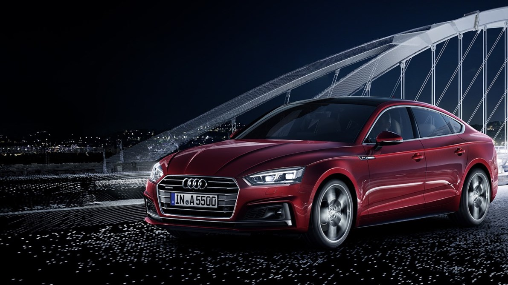

AUDI AG’nin geçmişine bakıldığında 19. yüzyıla kadar dayanan otomobil geleneği ve motor üretimini içeren heyecan verici ve çeşitli bir geçmişi görülebilmektedir. Her şey Almanya’nın öncü otomobil mühendislerinden biri olan August Horch ile başladı.
Saksonya eyaletindeki Mittweida kentindeki Teknik Üniversite’den mezun olduktan sonra Horch’un ilk işi, ilk olarak Motor Üretim Departmanında göreve başladığı, Mannheim’daki Carl Benz firmasındaydı. Daha sonra bu firmada Motorlu Araç Üretim Departmanı’nın başı oldu. 1899 yılının 14 Kasım tarihinde Köln kentinde Horch & Cie. Motorwagen Werke adı altında kendi işini kurdu.
Horch, şirketini bir anonim şirket halinde getirdiği Saksonya'ya, önce 1902 yılında Reichenbach’a ve 1904 yılında Zwickau’ya taşındı. August Horch, Yönetim Kurulu ve Denetleme Kurulu ile düştüğü fikir anlaşmazlıklarından sonra 1909 yılında şirketten ayrıldı ve Zwickau’da hemen ikinci bir otomobil şirketi kurdu. Soy ismi kullanımda olduğu ve marka tarafından korunduğu için yeni şirketin ismi olarak soy isminin Latince tercümesini seçti. Yani "horch!" –veya "hark" –"audi!" oldu. Soy isminin Latince emir biçimini kullanma fikri August Horch’un iş ortaklarından birinin oğlundan çıktı; Latince konusunda uzman olan bu çocuk yeni şirket ismi hakkındaki tartışmalara kulak misafiri olmuştu. August Horch müteakip yazışmalarda mektuplarını “Saygılar – Audi-Horch" olarak bile imzalamıştı. Audi Automobilwerke GmbH Aralık 1914 tarihinde bir anonim şirketine dönüştü.
Audi markası en başından itibaren bir sportif başarı geleneğini meydana getirdi. August Horch, Avusturya Alp Yarışları dahilinde 1911-1914 tarihleri arasındaki zafer dolu boy gösterimi sayesinde birkaç yıl içinde Audi’yi uluslararası olarak bilinir bir hale getirmeyi başardı. Açıkça başarılı olan Audi Type C 14/35 hp otomobil "Alplerin Fatihi" lakabını aldı. August Horch, Birinci Dünya Savaşı’ndan sonra şirketteki görevlerinden çekildi ve Berlin’e taşınarak bağımsız bir otomotiv uzmanı olarak yaşamını sürdürdü.
